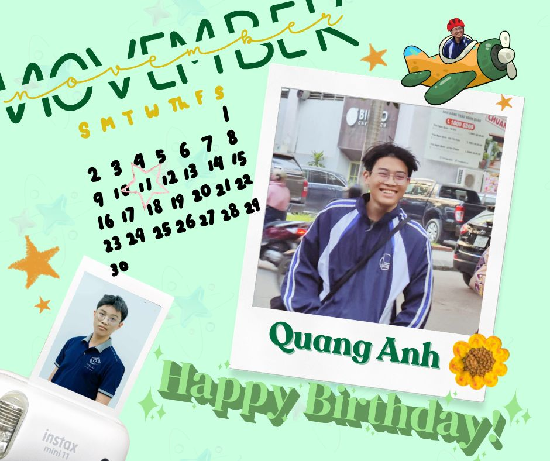

We concentrate on machine-learning models and algorithms to understand natural language. Here are our major research topics that we are currently interested in.
Explore Our Research →
"Agora Intelligence Lab (AgIL) is an independent, open research lab currently not affiliated with any institution or organization. AgIL is founded on the principle of academic freedom, fostering a collaborative environment where researchers, students, and practitioners can explore and develop innovative ideas in Artificial Intelligence without structural constraints.AgIL adopts a multi-disciplinary and multi problem oriented approach to AI research. Rather than focusing solely on technical dimensions, the lab embraces a broad spectrum of domains surrounding AI, including computer science, social sciences, linguistics, cognitive science, ethics, and human-centered studies. We view AI not only as a computational tool but as a transformative paradigm that intersects with society, language, culture, and human behavior.Our research spans core AI methodologies such as machine learning, deep learning, computer vision, natural language processing, and intelligent systems while also addressing social impact, language technologies, AI ethics, human AI interaction, and interdisciplinary applications. By integrating technical rigor with social and linguistic perspectives, AgIL aims to advance AI systems that are not only intelligent, but also responsible, interpretable, and societally aligned.AgIL aspires to become a dynamic and open intellectual hub where diverse disciplines converge, bold ideas are cultivated, and impactful research is created at the intersection of AI and the broader human context."
We have concentrated on the state-of-the-art techniques and algorithms of sentiment analysis or opinion mining on specified domains. These studies are from the sentence level to document level as well as aspect-based sentiment. Two main domains which we are interested in are education and commercial products. We perform three research works such as building corpora, finding good models and creating beneficial applications. If you would like to understand in detail, please refer to our related paper in the section Publications.
More information in this slide.